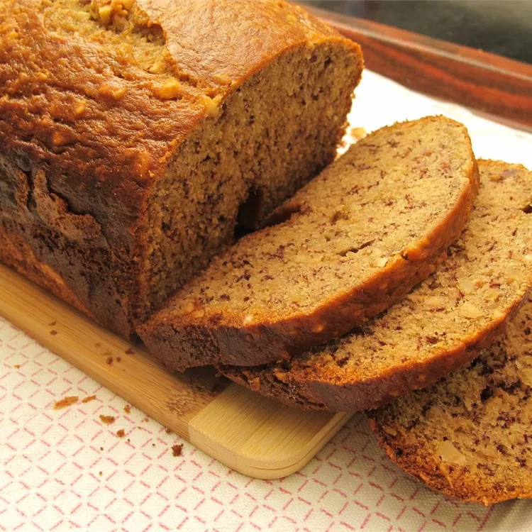

Pão de banana

Este pão de banana para máquina de pão é rápido e fácil de fazer usando a configuração Massa para misturar e depois assar com o controle ajustado para leve.
- 2 Bananas
- 2 Xícaras de Farinha de trigo
- 3/4 de xícara de açúcar
- 2 ovos
- 3 colheres de óleo vegetal
- 1 colher de fermento
- 1/2 colher de bicarbonato de sódio
- Coloque as bananas, a farinha, o açúcar, os ovos, o óleo, o fermento e o bicarbonato de sódio na forma da máquina de pão.
- Selecione a configuração Massa; pressione Iniciar. Misture a massa até que esteja bem combinada e as bananas estejam amassadas, de 3 a 5 minutos. Use uma espátula de borracha para empurrar a massa das laterais da forma de pão, se necessário. Pressione Parar e alise a parte superior do pão com uma espátula de borracha.
- Selecione a configuração Bake; pressione Start. Asse na máquina de pão até que um palito inserido no centro saia limpo, cerca de 50 minutos. Se houver massa no palito, reinicie a máquina em Bake e continue assando por 10 a 15 minutos.
-
Retire a forma da máquina. Deixe o pão na forma por 10 minutos antes de transferi-lo para uma grade para esfriar completamente.
Página inicial